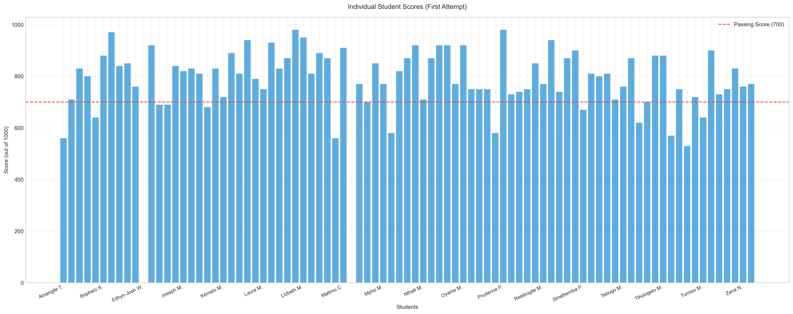
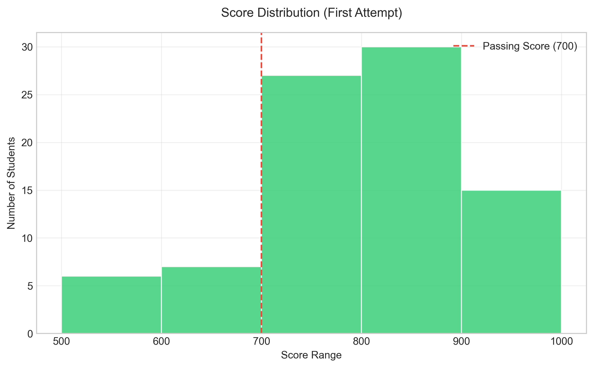
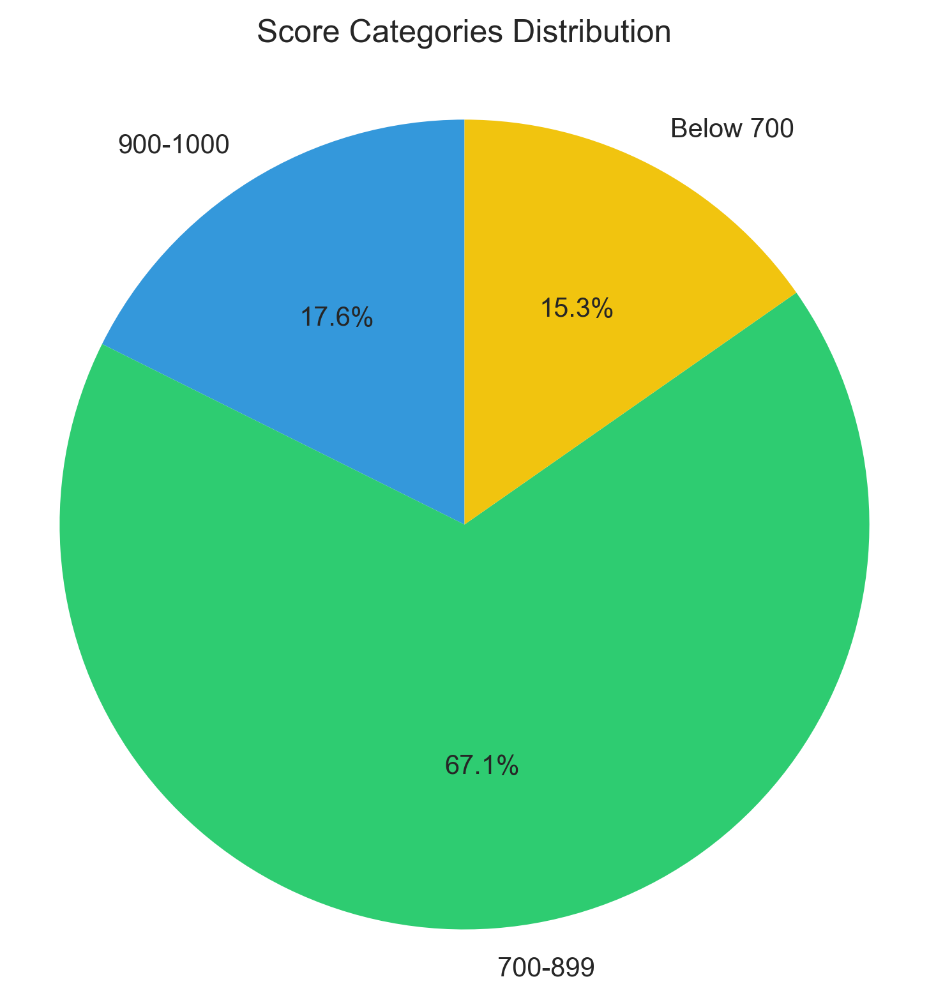
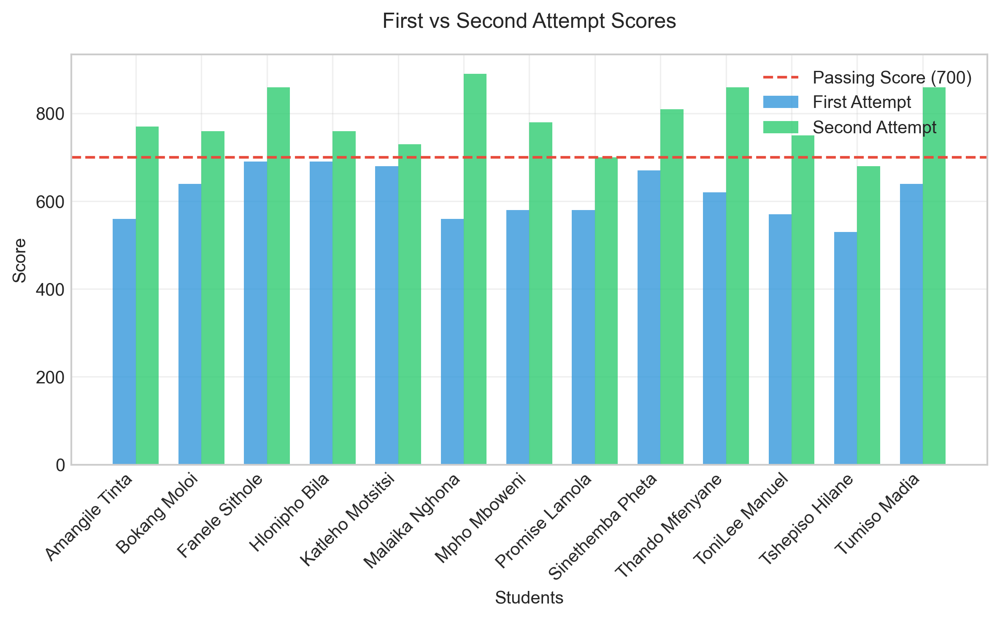

Performance Analysis of 92 Students
This report analyzes the performance of 92 students who took the Microsoft Azure AZ-900 Fundamentals Exam. The exam requires a minimum score of 700 out of 1000 (70%) to pass. Some students failed their first attempt, and while some retook the exam, others did not. Specifically, one student failed their second attempt, and two students did not retake the exam after failing the first attempt. Additionally, some students did not write the exam.
92
700
787.9
94.6%




The Microsoft Azure AZ-900 Fundamentals Exam results demonstrate excellent overall performance with a 94.6% final pass rate. The high success rate in retakes (92.3%) suggests that additional preparation time significantly benefits students. The distribution shows that most students achieve scores well above the passing threshold, with 25.6% scoring 900 or above.
While there are a few cases requiring attention (one second-attempt failure and two non-retakes), the overall results indicate strong comprehension of the Azure fundamentals material. The improvement shown in second attempts reinforces the effectiveness of targeted study based on first-attempt feedback.